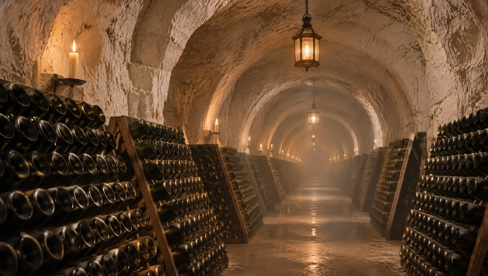
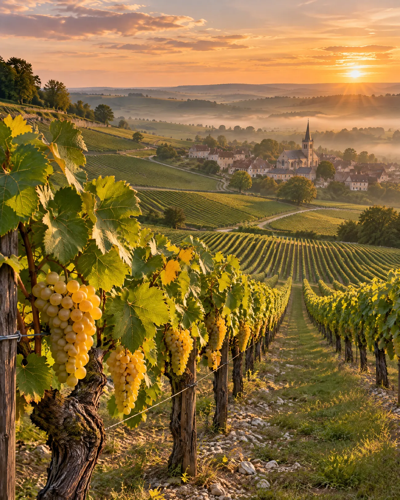
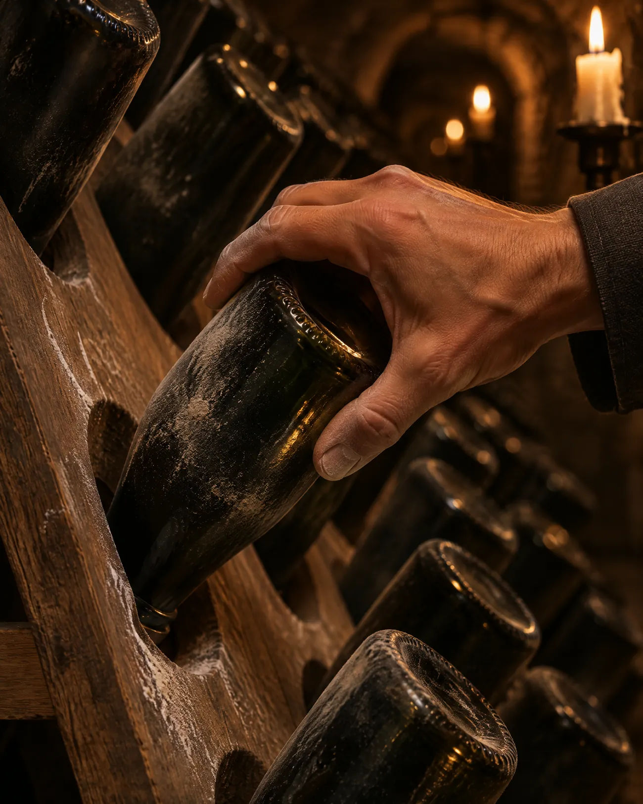

Champagne · Côte des Blancs · 1887
Clos Séraphin
Quatre générations, onze hectares de chardonnay et une cave creusée dans la craie. Nous faisons peu de bouteilles, et nous les attendons longtemps.
01 — Le terroir
La craie, avant le vin
Sous trente centimètres de terre, la craie descend à plus de cent mètres. Elle garde l'eau de l'hiver et la rend à la vigne en été. Le chardonnay y prend sa tension, et ce goût de pierre mouillée qui signe la Côte des Blancs.
- 11 ha
- de vignes
- 27
- parcelles
- 94 %
- chardonnay
02 — Le temps
Trente-six mois sur lattes
La règle en demande quinze. Nos bouteilles dorment trois ans dans le noir, à onze degrés. Puis vient le remuage, à la main : un quart de tour, un trait de craie sur le cul pour s'y retrouver, et l'on recommence le lendemain.
- 36 mois
- sur lattes
- 11 °C
- toute l'année
- ¼
- de tour par jour
03 — L'instant
Trois ans d'attente, une seconde
Six bars sous le bouchon : il ne demande qu'à partir. Puis le vin monte dans la flûte, la mousse retombe, et un cordon de bulles fines s'installe pour de bon.
Découvrir les cuvéesLes cuvées
Quatre vins, une seule main
Tout est récolté, vinifié et mis en bouteille à la propriété. Nous tirons quarante mille bouteilles les bonnes années, moins les autres.
Brut RéserveChardonnay, pinot noir · dosage 7 g/l 36 €
L'assemblage de la maison, avec un tiers de vins de réserve. Poire, brioche, une finale nette. 36 mois sur lattes.
Blanc de Blancs100 % chardonnay · extra-brut 4 g/l 44 €
Nos parcelles les plus crayeuses. Agrumes, amande fraîche, une salinité qui tient le vin droit. 42 mois sur lattes.
Rosé de saignée100 % pinot noir · brut 6 g/l 49 €
Quarante heures de macération, pas une de plus. Groseille, pivoine, une pointe d'amertume. 30 mois sur lattes.
Millésime 2015Vieilles vignes · brut nature 78 €
Trois parcelles plantées en 1961, vinifiées en fût. Huit ans de cave, 4 200 bouteilles numérotées à la main.
Prix départ cave, la bouteille de 75 cl. Magnums sur demande. Expédition en France par caisse de six, sous dix jours.


Le vignoble
Vingt-sept parcelles, toutes à pied
Les vignes entourent le village : la plus lointaine est à vingt minutes de marche du pressoir. Nous travaillons les sols au cheval sur les vieilles parcelles, enherbons un rang sur deux, et vendangeons à la main, en petites caisses.
Le raisin est pressé dans l'heure. C'est la seule chose pour laquelle nous sommes pressés.
- 1961
- la plus vieille vigne
- 12 jours
- de vendange

La cave
Un quart de tour, chaque matin
La crayère a été creusée par l'arrière-grand-père, à la pioche, entre 1887 et 1893. On y descend par un escalier de quatre-vingt-seize marches. Les bouteilles y reposent couchées, puis passent six semaines sur pupitre.
Un bon remueur tourne trente mille bouteilles par jour. Chez nous, c'est Bastien, et il prend son temps.
- 96
- marches
- 180 000
- bouteilles en repos
« On ne fait pas le champagne. On le laisse se faire, et l'on s'efforce de ne rien déranger. »
Visiter la cave
Une heure et demie sous la terre
Huit personnes au plus par visite, menée par un membre de la famille : le pressoir, la crayère, puis trois cuvées dégustées au caveau. Prévoyez un lainage, il fait onze degrés en bas.
- Adresse
- 7, rue de la Crayère
51190 Chantecraie - Visites
- Mardi au samedi, sur rendez-vous
10 h · 14 h 30 · 16 h 30 - Contact
- 03 00 00 00 00
caveau@clos-seraphin.example - Commandes
- Au caveau ou par courriel
Livraison en France, par six